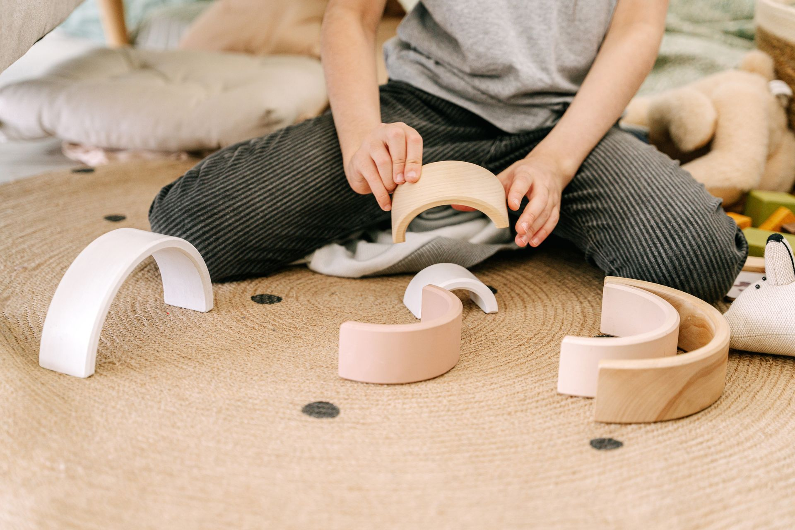
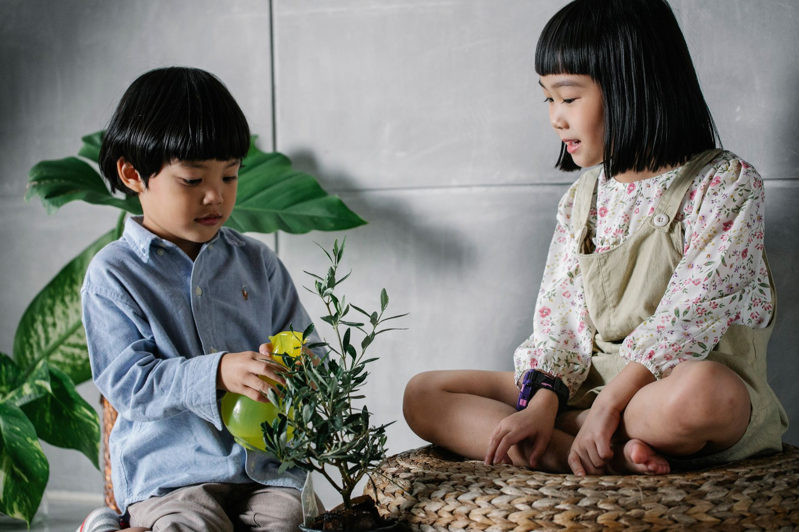
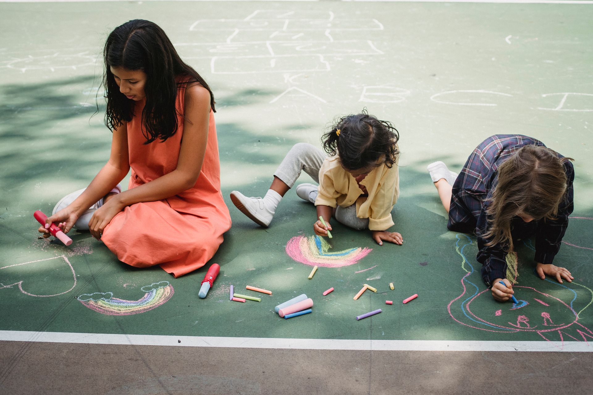
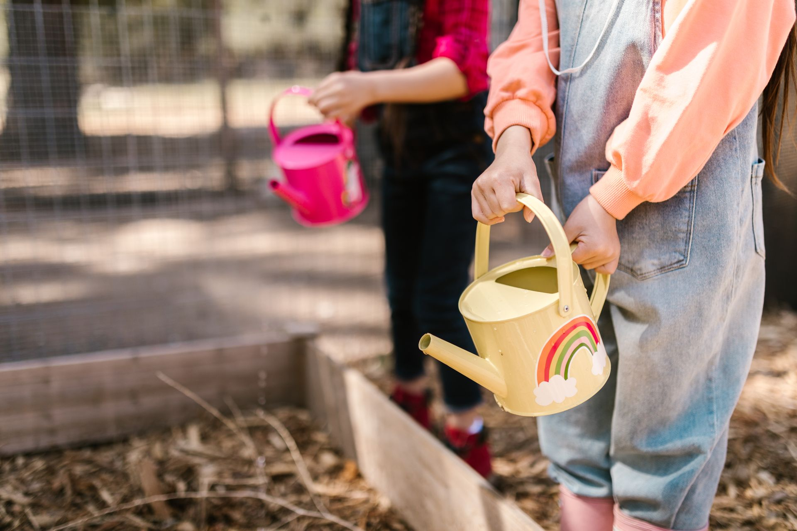
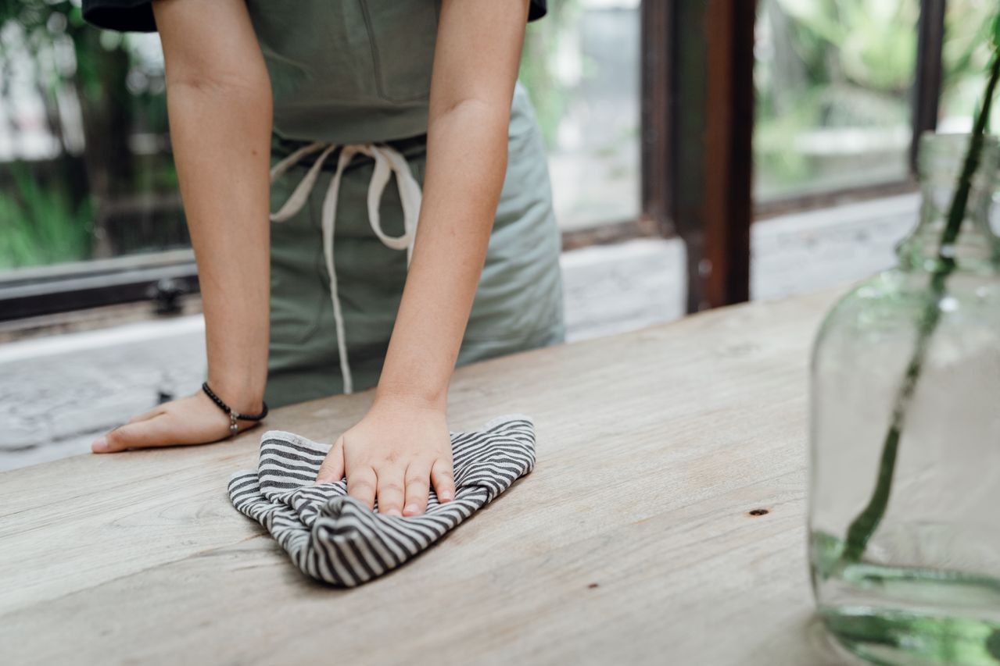

Authentic Montessori
A carefully prepared Casa environment rooted in independence, concentration, and respect for the child.
A beautiful Montessori community in the heart of Vancouver, where children grow with independence, curiosity, confidence, and joy.
Full-day Casa program for children ages 2.5–5.
Why Families Choose Us

A carefully prepared Casa environment rooted in independence, concentration, and respect for the child.
A balanced day of Montessori work, outdoor exploration, rest, enrichment, and community life.

Children grow from newcomers into explorers and then confident classroom leaders.

Creative arts, movement, STEM discovery, French, music, yoga, and cultural exploration.

Our staggered classroom schedule supports dedicated outdoor play and exploration for each group every day.
We walk alongside children and families through one of the most important seasons of life.
Our Programs
Our mixed-age Casa program brings together purposeful Montessori learning, outdoor exploration, rest, enrichment, and meaningful community life in a calm and thoughtfully prepared environment.
The Montessori Work Cycle
Children receive individual and small-group lessons, choose purposeful work, and develop concentration through an uninterrupted Montessori work cycle.
The Three-Year Casa Journey
Our mixed-age classroom allows children to build strong foundations, deepen their learning, and gradually become capable and caring role models within their community.
A Balanced Full Day
Montessori work, outdoor exploration, meals, rest or quiet experiences, enrichment, and community life create a thoughtful rhythm for the whole child.
Casa · Ages 2.5–5
Explore our Montessori curriculum, three-year Casa journey, daily rhythm, outdoor learning, enrichment, and optional extended-care services.
Our Montessori Philosophy
“The most important period of life is not the age of university studies, but the first one — the period from birth to the age of six.”— Maria Montessori
At the heart of everything we do lies the Montessori philosophy— a timeless, research-backed approach to education that honours the child as naturally curious, capable, and self-driven. We do not simply adopt Montessori as a method. We live it. It is the soul of our school.
Montessori places independence, intrinsic motivation, and deep concentration at its core. When children are given meaningful choices, space to explore, and uninterrupted time to focus, they begin learning not for approval, but for the joy of discovery.
In our Casa environment, meaningful hands-on work helps children build confidence, problem-solving skills, and a lasting love of discovery.
Explore our Montessori philosophy
Our Learning Environment
Our indoor and outdoor environments are intentionally designed to support independence, concentration, creativity, movement, and a deep love of learning.
Learn more about our spaces
Concept rendering of our future Montessori classroom.
Bright, airy classrooms that support focus, calm, and well-being.
A secure outdoor environment for movement, nature play, and discovery.
Beautiful, child-scaled spaces with natural materials, order, and purpose.
Spaces that nurture connection, respect, and joyful learning.
Our Home Begins Here
Together We Grow began with a simple belief: after home, there is no place more important in a young child’s life than the school they walk into each morning.
Founded by Connie Chan, Together We Grow is being created as a Montessori community where children feel known, families feel heard, and educators grow alongside the children they guide.
A leadership team committed to authentic Montessori practice, responsive care, and meaningful family partnerships.
Educators who observe carefully, guide respectfully, and support each child’s independence and individual development.
Carefully selected specialists extending creativity, movement, language, music, STEM, and cultural discovery.
Parent Resources
Explore practical, evidence-informed guides designed to help families understand Montessori education and make confident early-learning decisions.
Montessori Guide
Learn how Montessori education develops independence, confidence, concentration, and a lifelong love of learning.
Read the Complete Guide →Parent Comparison
Compare Montessori education with traditional daycare to help choose the best learning environment for your child.
Compare Montessori vs Daycare →Montessori at Home
Discover simple Montessori-inspired activities parents can do at home to support independence, concentration, confidence, and practical life skills.
Explore Home Activities →Book a Tour
Tell us a little about your child and what your family is looking for. We will follow up with tour details, enrollment information, and next steps.
Our admissions team typically responds within 1–2 business days.